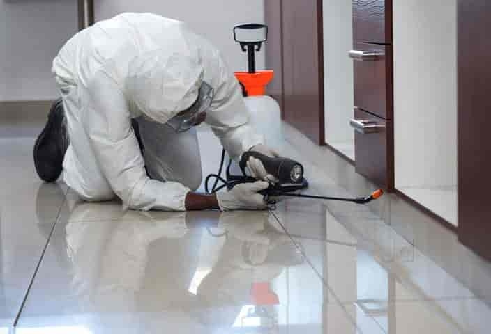
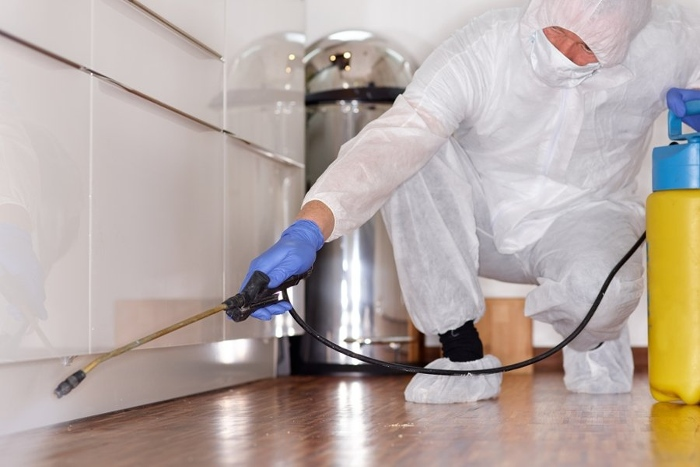

6 Reasons Why You Need Pest Control Services?
There are many reasons to use pest control services. First, it can help you prevent pests from entering your home in the first place. A pest control company can help you identify potential entry points and seal them up so that pests can’t get in. They can also help you eliminate the food and water sources that pests are attracted to.
Another reason to use pest control services is to get rid of the pests that are already in your home. A pest control company will have the tools and knowledge necessary to safely and effectively eliminate the pests
1. Pests are not going anywhere, so let’s take precautions:

In the many States, there are over 27,000 businesses that provide pest control services - which just goes to show how frequently we need to call in professional help to take care of these pesky critters. If you believe that your home, office, or apartment has been infested, it's important to act quickly. These infestations can spread rapidly and end up costing you a lot more money in the long run if they're not dealt with right away. Exterminators exist for a reason - so make use of one as soon as you see a problem.
2. These professionals are experienced:
No matter how many YouTube videos you have watched on how to control pests in your place, there is always a better way, and that is consulting with professionals. Pest control services have been around for many years for a reason.These businesses are experienced and professional, which is why they offer value and guarantees.
3. They are equipped and have the right tools:
It's okay to admit that most of us don't have the necessary tools to effectively get rid of a pest infestation on our own. Pest control professionals are equipped with both commercial-grade insecticides and the latest technology to provide solutions to problems that would otherwise go unresolved. In addition to their top-of-the-line equipment, these professionals also have the expertise required to get the job done right.
4. Pests can be harmful to your health:
We all know that termites can cause serious damage to your home or property, but did you know that many common pests can also pose serious health risks? This is another good reason to hire professional exterminators. The health of your family and you always come first, so this is something worth considering.

5. Professional damage evaluation:
When you're faced with a pest problem, it can be difficult to properly assess the situation and determine what steps need to be taken in order to get rid of the pests. This is where pest care professionals come in - they are able to accurately evaluate the problem, determine what kind of treatment is necessary, and give you a timeline for when the problem will be resolved. Having this information from a professional can help put your mind at ease and give you the peace of mind that comes with knowing that your pest problem will be taken care of in a timely and effective manner.
6. Their results are effective and guaranteed:
Pest extermination professionals are experienced and effective in their field. The services they provide usually result in a long-term solution to your pest problem. It is very difficult for an untrained person to successfully get rid of pests.
Pests can cause serious damage to your health and property, so it is always best to catch the problem early and seek help from a professional.
In summary, pest control services are essential. No one wants to deal with bed bugs, mice, bats, cockroaches, or ants. These pests not only spread disease, but also cause damage to your home. Professional pest control services can help you find success with pest control. there are a few reasons as to why you should get pest control services. The benefits are not only limited to your health, but to your economic health as well.